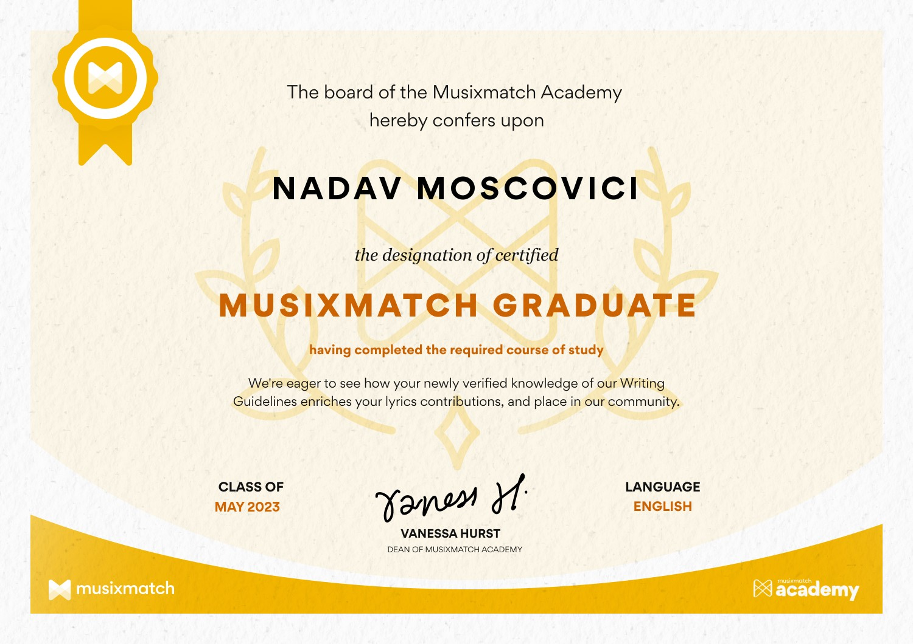

_____ _ _ _ _ _ __ _____ _____
/ __ \ | (_) | | | | | / _| _ || _ |
| / \/_ __ __ ___ _| |_ _ __ __ _| | | | |__ __ _ _ __| |_| |_| || |/' |
| | | '__/ _` \ \ /\ / / | | '_ \ / _` | |/\| | '_ \ / _` | '__| _\____ || /| |
| \__/\ | | (_| |\ V V /| | | | | | (_| \ /\ / | | | (_| | | | | .___/ /\ |_/ /
\____/_| \__,_| \_/\_/ |_|_|_| |_|\__, |\/ \/|_| |_|\__,_|_| |_| \____/ \___/
__/ |
|___/
SYS_ADMIN: Nadav Moscovici
STATUS: Computer System Engineer | Passionate about design, art, and philosophy
During my time at the Scientific High School Galileo Ferraris (2017–2022)...
In my free time, I enjoy working on personal projects, especially those involving coding and problem-solving. Whether it’s experimenting with new programming concepts, building small applications, or refining my skills, I find satisfaction in bringing ideas to life through technology. I also take part in competitions that challenge me to think critically and improve my abilities, whether they are coding contests or other skill-based challenges.
Beyond my technical interests, I enjoy engaging in social events where I can meet new people, exchange ideas, and gain fresh perspectives. Another passion of mine is poetry—I appreciate how words can convey deep emotions and create vivid imagery.
Cooking is another activity I deeply enjoy. Experimenting with flavors, trying out new recipes, and crafting meals is both a creative and rewarding process. Just like coding, it requires precision, intuition, and a bit of experimentation to get things just right.
Overall, my free time is a blend of creativity, learning, and connection. Whether through coding, competitions, poetry, cooking, or entertainment, I enjoy engaging in activities that challenge me, inspire me, and bring a sense of fulfillment.
In addition to my various interests, I am also a lyrics curator on Musixmatch and Genius. This role allows me to combine my passion for music with my attention to detail by transcribing, verifying, and refining song lyrics. I enjoy analyzing lyrics, exploring their meanings, and ensuring they are accurately presented for listeners worldwide.

If you have any questions, feedback, or just want to chat, feel free to reach out. I’m always open to new connections and conversations.